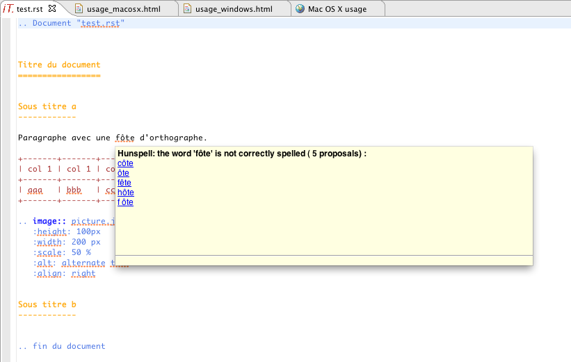
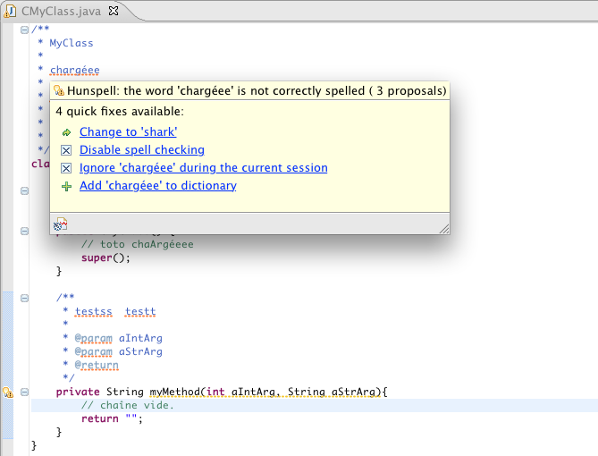
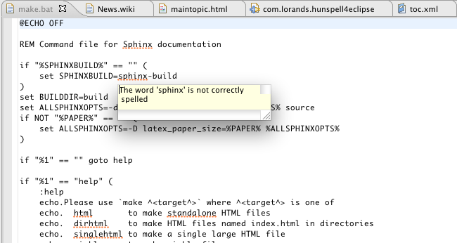

Mac Os X Snow Leopard
The spelling preferences

Spelling problem in the ReST editor:
Look at the update site of the ReStructuredText (ReST) editor for Eclipse
Copyright www.isandlaTech.com 2010-2011

Spelling problem in the Java editor:

Spelling problem in the basic text editor:
